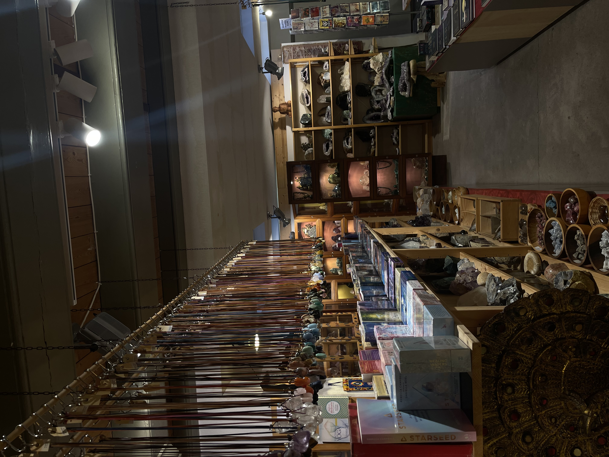
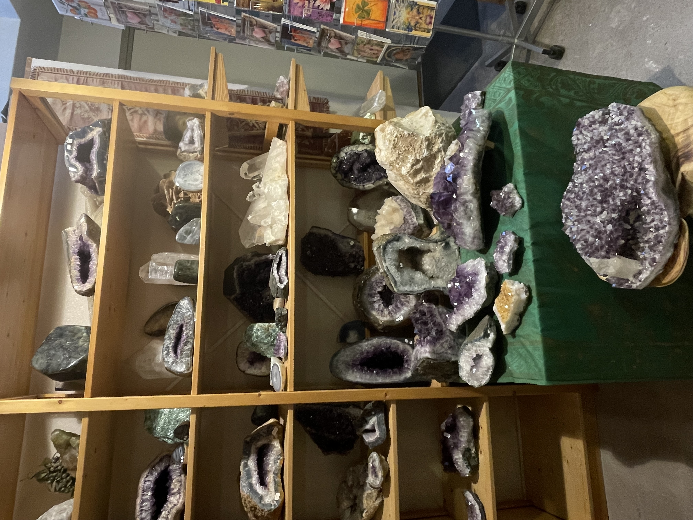
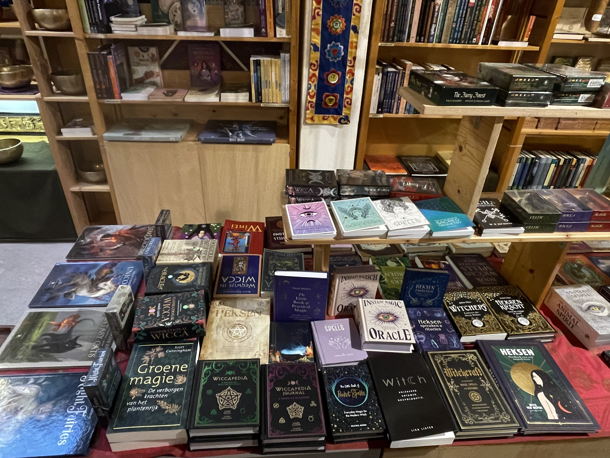
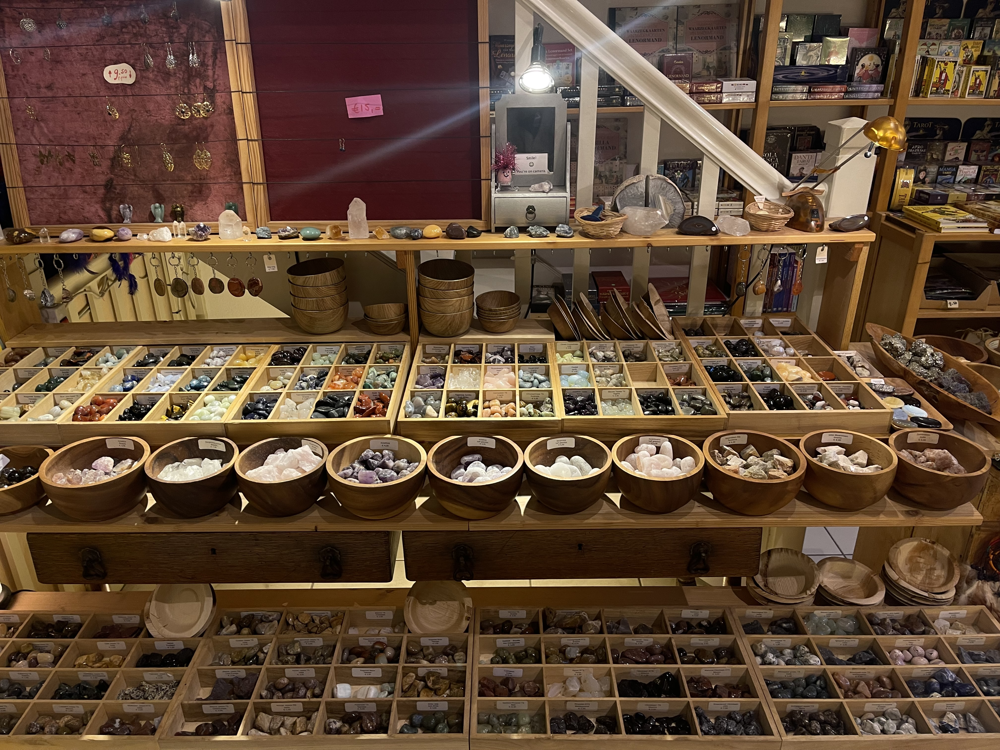

Fabula Rosa

Fabula Rosa is een klein knus spiritueel winkeltje die te vinden is op: Rozengracht 15D (1016LP). Het winkeltje zit dus lekker in het centrum van Amsterdan wat erg voordeling is voor toeristen. De winkels is de perfecte plek om even te ontsnappen van alle drukte van Amsterdam en even de rust in te stappen.
Het winkeltje is erg makkelijk bereikbaar met het openbaar vervoer het is vanaf de halte Westermark (wat maar een 6 minuut ritje is met de tram vanaf Amsterdam Centraal) maar 1 minuut lopen naar de winkel! Super handig voor toeristen.
Pro's van de winkel
Wat ik erg leuk vind van deze winkel is dat je naast edelstenen ook kaarsen, sieraden en zelfs boeken kan kopen, de winkel heeft dus een erg groot assortiment voor spirituele dingetjes wat ik erg leuk vind. Ook hebben ze een hele boven verdieping met wierrook en alles wat te maken heeft met meditatie!
Fabula Rosa heeft bij elke edelsteen die ze verkopen ook een klein labeltje voor de stenen staan met wat korte informatie over de edelsteen en de prijs. De kaartjes zijn in het engels en dus erg goed voor toeristen.
Duurzaamheid
Fabula Rosa is niet alleen door haar locatie nummer 1 op de lijst, de winkel is ook nog eens erg duurzaam! zo gebruikt de winkel geen plastic voor bestellingen in te pakken en is de hele winkel dus plastic vrij. Verder zijn alle edelstenen duurzaam en op een eerlijke manier geleverd wat ook zeker te voelen is in de zweer van de winkel! Ook zijn de edelstenen zeer goede kwaliteit en erg mooi.
Mijn Mening
Mijn eerste indruk van de winkel was vooral dat het erg rustgevend en kalm maar tegelijk erg leuk en huiselijk voelde. Ik vind dat de winkel erg leuk is ingericht en versiert is, ook vind ik het erg fijn dat er wierrook stond te branden zodat de winkel nog meer spiritueel en in haar element voelde. De eigenaar van het winkeltje was een hele aardige vrouw waar ik kort mee heb staan praten over de winkel, ik merkte al snel aan haar dat zij de winkel echt als een passie ziet en dat zij zelf ook echt een gevoel heeft voor spirituele dingen wat naar mijn mening altijd terug te zien is in de winkel. De producten die de winkel verkoopt vind ik heel mooi en erg goede kwaliteit en ze worden verkocht voor een prima prijs! De kaarsen en boeken die de winkel verkoopt vind ik ook erg leuk en uniek. kortom vind ik dat deze winkel de 1e plek op de zweefgids zeker verdient ik geef de winkel een 9/10.